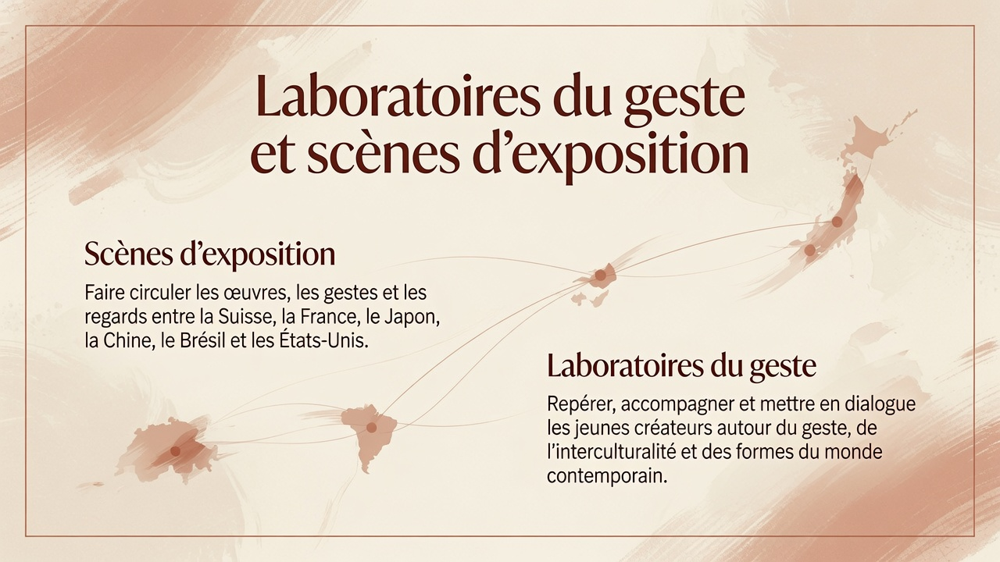

Faire circuler les œuvres, les gestes et les regards entre la Suisse, la France, le Japon, la Chine, le Brésil et les États-Unis.
Page 6
Laboratoires du geste et scènes d’exposition
Repérer, accompagner et mettre en dialogue les jeunes créateurs autour du geste, de l’interculturalité et des formes du monde contemporain.

Page 7
Passages interculturels
La Fondation XXVII construit des passages artistiques entre la Suisse, la France, la Chine, l’Amérique latine et les scènes africaines, arabes et berbères.
L’art devient un lieu commun au sens noble : un espace où les cultures se rencontrent sans s’effacer.

Page 8
Art, formation humaine et avenir du travail
La pratique artistique forme l’attention, la patience, le discernement et la capacité à donner forme à une idée.
Confiance, persévérance, discipline, écoute, intelligence sensible et capacité de transformation.
Relier l’atelier, l’école et le monde professionnel sans réduire l’art à une simple compétence.

Page 9
Passerelles vers la reconnaissance
Ateliers, mentorats, expositions, partenariats éducatifs et passerelles avec les écoles, universités et institutions.
Donner une place visible au geste artistique dans les parcours académiques, accompagner les jeunes créateurs et sensibiliser les institutions éducatives, construire des partenariats durables.

Mécénat
Soutenir la Fondation XXVII
Chaque soutien ouvre un espace de création, de confiance et de transmission. En devenant mécène ou partenaire, vous contribuez à rendre l’art accessible aux enfants, aux jeunes talents et aux publics éloignés de l’écosystème culturel.
Permettre à des enfants de découvrir la pratique artistique, les matières, le geste et l’expression personnelle.
Soutenir un parcours de mentorat, d’exposition et de progression artistique dans la durée.
Donner de la visibilité aux œuvres et créer des passerelles entre familles, artistes, institutions et mécènes.
Devenir mécène ou partenaire
La Fondation XXVII privilégie une prise de contact directe afin de construire des engagements adaptés : soutien financier, mécénat de compétence, partenariat institutionnel ou accompagnement d’un programme artistique.